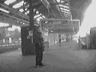
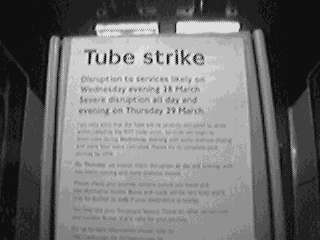
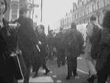
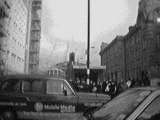
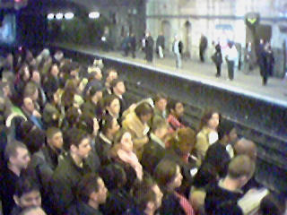
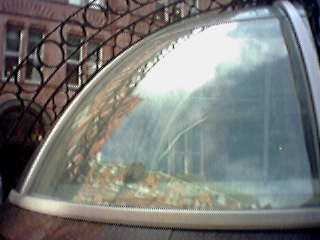
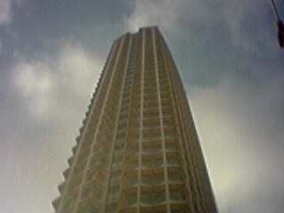
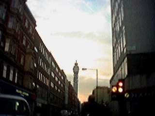

I, like many others, was affected by the RMT Tube Strike on Thursday 29th March. There was no Central Line service from Ealing Broadway, so I had to take a normal train to Paddington, and then walk the 3 miles from there to work. I then walked back from Chancery Lane to Paddington in the evening. You can read about the journeys to work here, and the one home here.
Tube disruptions
|  |  |
|  |  |
|  | |
Famous and not so famous buildings I saw on my wanderings
|  |
|  |
|  |
Back to index page